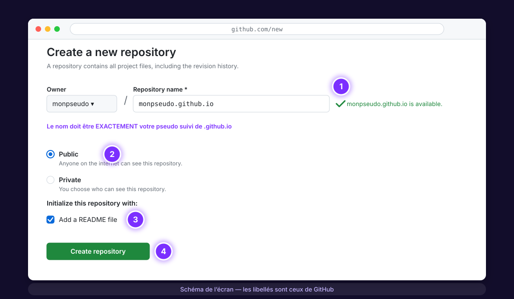
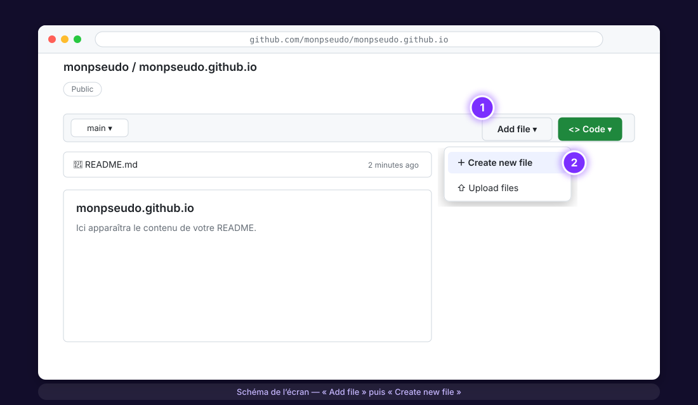
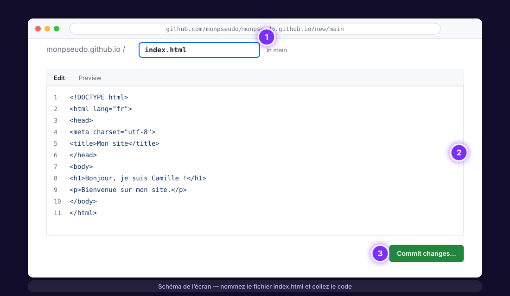
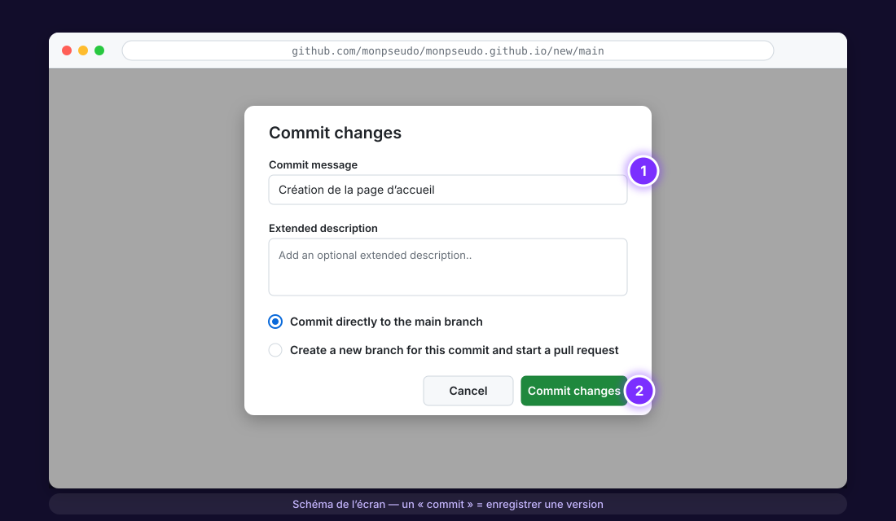
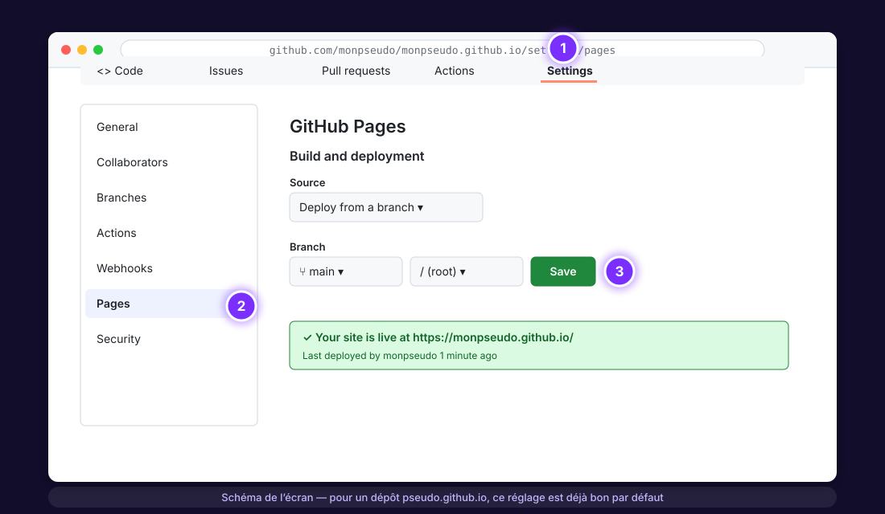
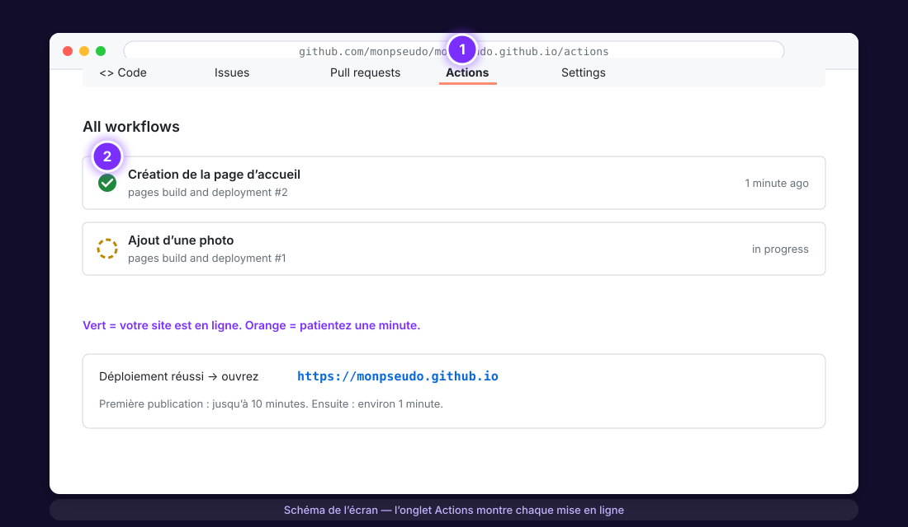
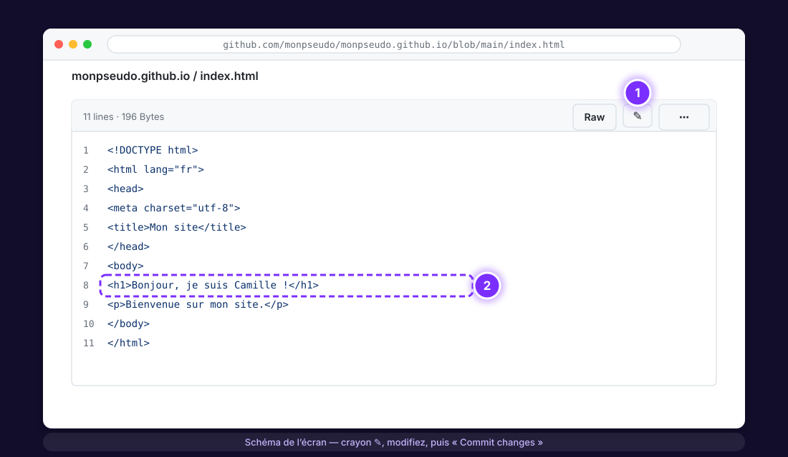

Créer un site web gratuit avec GitHub Pages, pas à pas
Un site en ligne à l’adresse votre-pseudo.github.io, hébergé gratuitement et pour toujours, sans installer de logiciel ni écrire une ligne de commande. Ce site que vous lisez est fait exactement comme ça.
La documentation de GitHub est complète mais suppose que vous connaissez déjà Git, les branches et le terminal. Ici : uniquement des clics dans le navigateur, un schéma d’écran à chaque étape, et les erreurs classiques expliquées avant que vous tombiez dessus.
Avant de commencer
- Une adresse e-mail valide (pour confirmer le compte).
- Un navigateur à jour (Chrome, Firefox, Safari, Edge).
- Rien d’autre : pas de logiciel, pas de carte bancaire, pas de Git à installer.
Dans tout le tutoriel, remplacez monpseudo par le nom d’utilisateur que vous choisirez à l’étape 1.
1Créer un compte GitHub
- Ouvrez github.com/signup.
- Saisissez votre e-mail, un mot de passe et un nom d’utilisateur. Choisissez-le avec soin : il deviendra l’adresse de votre site (
monpseudo.github.io). Lettres minuscules, chiffres et tirets uniquement ; évitez les noms trop longs. - Validez le code reçu par e-mail. Le plan gratuit (« Free ») suffit, ne prenez rien d’autre.
Pour un site personnel ou un portfolio, un pseudo du type prenom-nom est idéal : prenom-nom.github.io est lisible, facile à dicter et reste professionnel.
2Créer le dépôt « monpseudo.github.io »
Sur GitHub, un site vit dans un dépôt (« repository ») : c’est simplement un dossier en ligne qui garde l’historique de vos modifications.
- Une fois connecté, ouvrez github.com/new (ou le bouton vert New en haut à gauche).
- Dans Repository name, tapez exactement
monpseudo.github.io— votre nom d’utilisateur, suivi de.github.io. C’est ce nom précis qui dit à GitHub « publie ce dépôt comme un site ». Un ✓ vert confirme qu’il est disponible. - Laissez Public coché (obligatoire pour GitHub Pages avec un compte gratuit).
- Cochez Add a README file : cela crée le dépôt avec un premier fichier, ce qui évite un écran intermédiaire déroutant.
- Cliquez sur Create repository.

Si le nom du dépôt n’est pas exactement votre pseudo + .github.io (une majuscule, une faute, un autre nom), le site ne se publiera pas à cette adresse. Vous pouvez renommer le dépôt plus tard dans Settings → General → Repository name.
3Ajouter la page d’accueil (index.html)
Un site web, au minimum, c’est un fichier nommé index.html. C’est lui que le navigateur affiche quand on ouvre votre adresse.
- Sur la page de votre dépôt, cliquez sur Add file puis Create new file.

- Dans la case du nom de fichier, tapez
index.html(tout en minuscules). - Copiez le modèle ci-dessous et collez-le dans la grande zone de texte. Changez le nom et le texte, bien sûr !
<!DOCTYPE html>
<html lang="fr">
<head>
<meta charset="utf-8">
<meta name="viewport" content="width=device-width, initial-scale=1">
<title>Camille Dupont — Mon site</title>
<meta name="description" content="Site personnel de Camille Dupont : projets, CV et contact.">
<style>
body { font-family: system-ui, sans-serif; max-width: 700px; margin: 40px auto; padding: 0 20px; line-height: 1.6; color: #222; }
h1 { color: #4c1d95; }
a { color: #4c1d95; }
</style>
</head>
<body>
<h1>Bonjour, je suis Camille !</h1>
<p>Bienvenue sur mon site. Je suis étudiante en économie et je m’intéresse à la data et à l’IA.</p>
<h2>Mes projets</h2>
<ul>
<li>Analyse de données : bientôt ici</li>
<li>Mémoire de fin d’études : bientôt ici</li>
</ul>
<h2>Contact</h2>
<p>Écrivez-moi : <a href="mailto:camille@example.com">camille@example.com</a></p>
</body>
</html>
4Enregistrer : le « commit »
Sur GitHub, enregistrer s’appelle commit. Chaque commit est une version datée de votre site : vous pourrez toujours revenir en arrière.
- Cliquez sur le bouton vert Commit changes… en haut à droite.
- Dans la fenêtre, écrivez un court message (par exemple Création de la page d’accueil). Laissez Commit directly to the main branch sélectionné.
- Cliquez sur Commit changes.

5Vérifier la mise en ligne
Pour un dépôt nommé monpseudo.github.io, GitHub publie automatiquement la branche main. Vous n’avez normalement rien à régler, mais voici où regarder.
Les réglages (Settings → Pages)
Ouvrez l’onglet Settings du dépôt, puis Pages dans le menu de gauche. Sous Build and deployment, vous devez voir Source : Deploy from a branch, Branch : main, dossier / (root). Quand le site est publié, un cadre vert affiche Your site is live at https://monpseudo.github.io/.

Le déploiement (onglet Actions)
L’onglet Actions liste chaque mise en ligne (« pages build and deployment »). Une coche verte = c’est en ligne. Un rond orange = encore une minute. La toute première publication peut prendre jusqu’à 10 minutes ; ensuite, comptez environ une minute après chaque modification.

Ouvrez maintenant https://monpseudo.github.io dans un nouvel onglet. 🎉
Attendez quelques minutes et rechargez avec Ctrl + F5 (Cmd + Maj + R sur Mac). Si ça persiste après 10 minutes, revérifiez le nom du dépôt (étape 2) et que le fichier s’appelle bien index.html.
6Modifier votre site
- Sur la page du dépôt, cliquez sur
index.html. - Cliquez sur l’icône crayon ✎ en haut à droite du fichier.
- Modifiez le texte, puis Commit changes… → Commit changes, comme à l’étape 4.
- Une minute plus tard, rechargez votre site : la modification est en ligne.

C’est tout le cycle : modifier → commit → une minute → en ligne. Vous pouvez le faire depuis n’importe quel ordinateur, et même depuis votre téléphone.
Aller plus loin
Ajouter une photo ou des images
Add file → Upload files, glissez vos images (idéalement dans un dossier images : tapez images/ devant le nom pour le créer), commit. Puis dans votre HTML : <img src="images/photo.jpg" alt="Ma photo">. Compressez vos images avant (moins de 300 Ko chacune) pour que le site reste rapide.
Ajouter d’autres pages
Créez par exemple projets.html de la même façon que index.html, et reliez-la depuis l’accueil : <a href="projets.html">Mes projets</a>. L’adresse sera monpseudo.github.io/projets.html.
Partir d’un modèle gratuit, joli dès le départ
Des modèles HTML gratuits et responsives existent, par exemple ceux de HTML5 UP (ce portfolio utilise leur modèle « Dimension »). Téléchargez le zip, décompressez-le, puis Add file → Upload files en glissant tout le contenu du dossier (le index.html doit être à la racine du dépôt, pas dans un sous-dossier).
Une page d’erreur personnalisée
Créez un fichier 404.html : GitHub l’affichera automatiquement pour toute adresse inexistante.
Votre propre nom de domaine
Vous pouvez relier un domaine acheté ailleurs (www.monnom.fr) : Settings → Pages → Custom domain, puis chez votre registrar un enregistrement CNAME vers monpseudo.github.io. GitHub fournit le certificat HTTPS gratuitement. Détails dans la doc officielle.
Être trouvé sur Google
Ajoutez une <meta name="description"> parlante à chaque page, un vrai titre, puis déclarez votre site dans la Google Search Console. Partagez l’adresse sur LinkedIn : les premiers visiteurs viendront de là.
Problèmes fréquents
« There isn’t a GitHub Pages site here » ou page 404
Dans 90 % des cas : le dépôt ne s’appelle pas exactement monpseudo.github.io, ou le fichier ne s’appelle pas index.html (attention à Index.html ou index.html.txt). Sinon, attendez 10 minutes : la première publication est lente.
Je modifie, mais rien ne change
Vérifiez dans l’onglet Actions que le déploiement est vert, puis forcez le rechargement (Ctrl + F5). Votre navigateur garde souvent l’ancienne version en cache.
Les accents s’affichent bizarrement (é, è…)
Il manque la ligne <meta charset="utf-8"> dans le <head>. Le modèle de l’étape 3 l’inclut.
Mon image ne s’affiche pas
Le chemin est sensible à la casse : images/Photo.JPG et images/photo.jpg sont deux fichiers différents. Vérifiez le nom exact dans le dépôt.
Je veux un deuxième site (un projet, une association…)
Créez un autre dépôt avec n’importe quel nom (ex. mon-projet), puis Settings → Pages → Source : Deploy from a branch → main. Il sera publié à monpseudo.github.io/mon-projet/. Vous pouvez en avoir autant que vous voulez.
Questions fréquentes
C’est vraiment gratuit ? Il y a un piège ?
Oui, c’est gratuit et sans publicité, depuis plus de dix ans. Les limites sont larges pour un site personnel : 1 Go de fichiers, environ 100 Go de trafic par mois, 10 publications par heure. Le seul « prix » : votre code est public (le dépôt est visible), ce qui est normal pour un site web de toute façon.
Quelles sont les limites techniques ?
GitHub Pages sert des fichiers statiques : HTML, CSS, JavaScript, images, PDF. Pas de PHP, pas de base de données, pas d’espace membre côté serveur. Pour un formulaire de contact, utilisez un service gratuit comme FormSubmit ou Formspree ; pour des commentaires, un outil comme Giscus.
Dois-je apprendre HTML ?
Pour ce tutoriel, non : copiez-collez le modèle. Pour aller plus loin, les bases du HTML et du CSS s’apprennent en quelques heures ; MDN (Mozilla) est la meilleure référence gratuite en français.
Et si je veux un blog avec des articles ?
GitHub Pages sait générer un blog à partir de fichiers texte avec Jekyll (déjà intégré, sans installation) : ajoutez un fichier _config.yml contenant theme: minima et écrivez vos articles en Markdown dans un dossier _posts. C’est un bon « niveau 2 » une fois ce tutoriel terminé.
Puis-je supprimer le site ?
Oui : Settings → General, tout en bas, Delete this repository. Le site disparaît en quelques minutes.
Votre site est en ligne ? Continuez.
Je m’appelle Sitraka Forler, Data Scientist et MLOps Engineer au Luxembourg, et j’enseigne la data science à l’université. Sur ce site vous trouverez des leçons gratuites (SQL, Python, finance) et des outils en ligne. Et si ce tutoriel vous a aidé, partagez-le à quelqu’un qui veut son site.